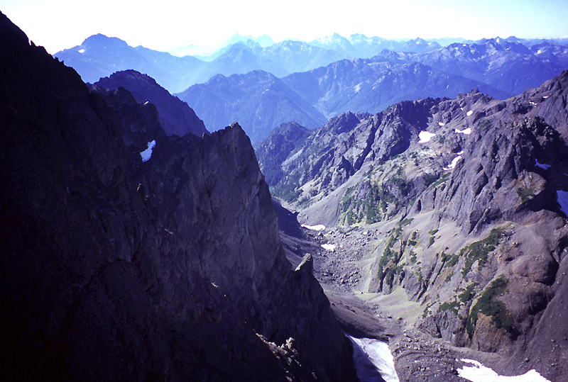
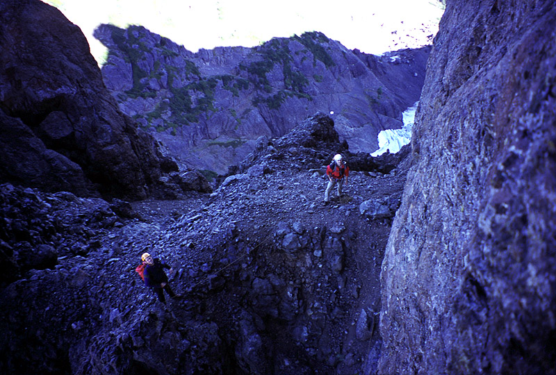
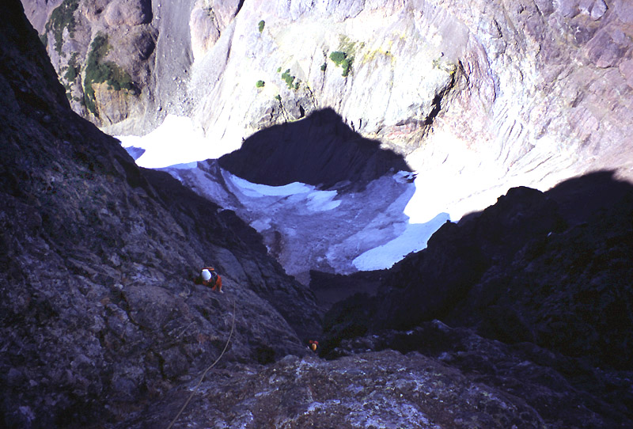
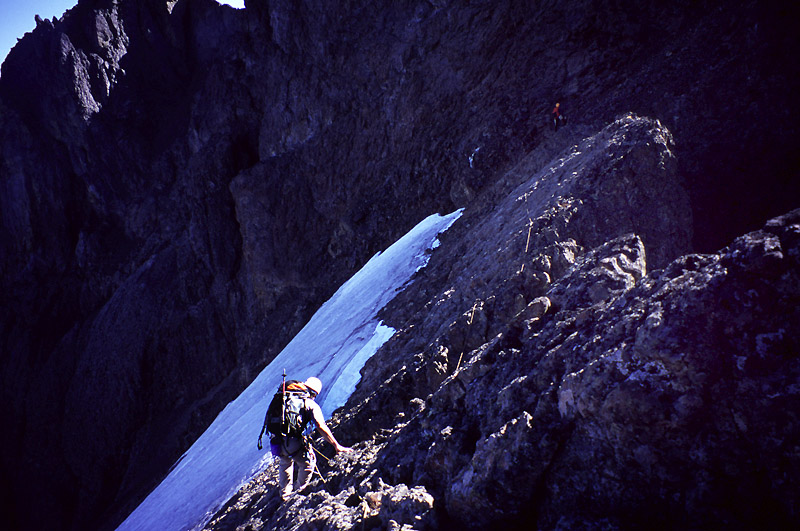
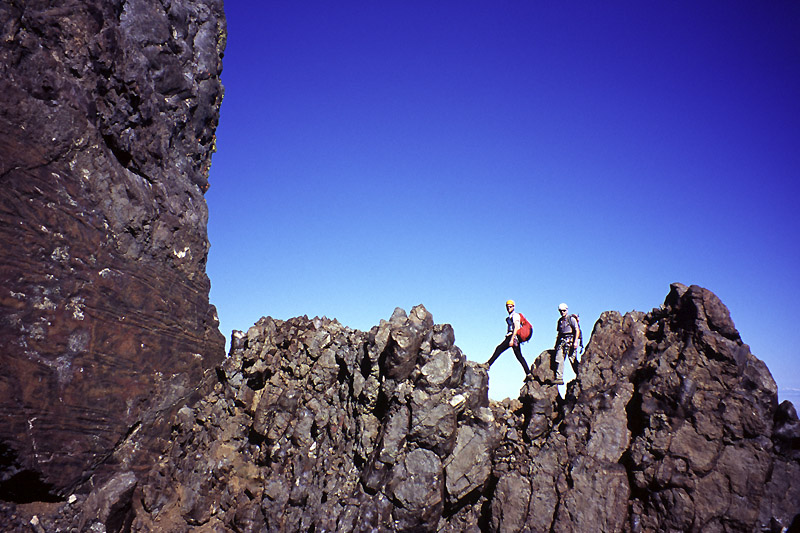
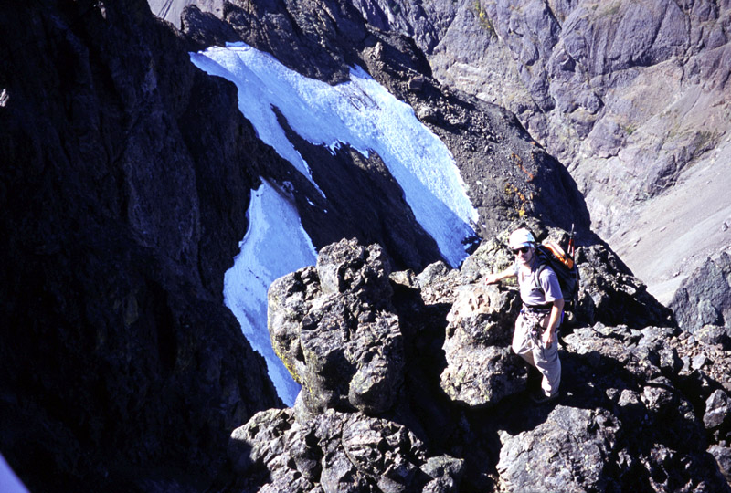
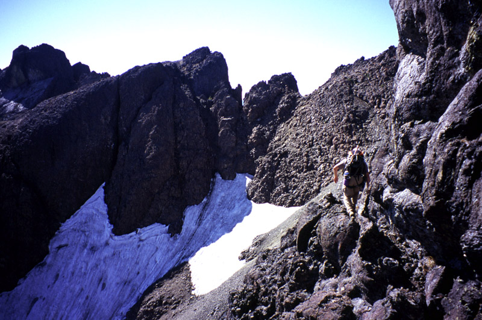
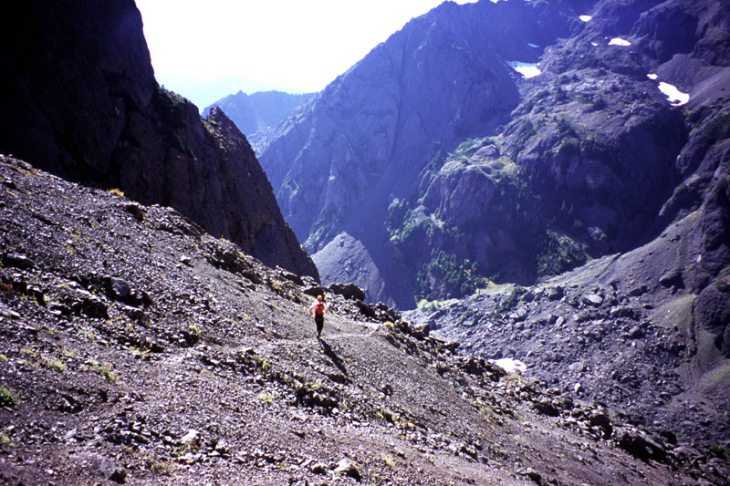
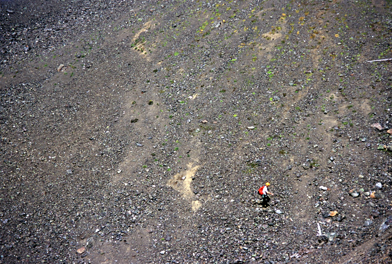

Mount Constance
- West Arete (5.6)
- September 26-27, 2004
It seemed like a good time to go visit Mount Constance, one of the large and steep peaks in the Olympics. The weather forecast was great, and we’d already had our eye on the Olympics for a climb of Mount Olympus (we had to cancel that because we couldn’t all get Monday off of work). Some folks like Josh and Theron ended up being busy, so it was Steve, Robert and myself.
Robert and I met Steve at the washout, then we crossed below the vertical cliffs it created where the road used to be. “Looks like Smith Rocks,” said Robert.
The bike ride up was really tedious, wearing out my thighs pre-maturely. Robert and Steve were a good ways ahead. Eventually I realized that by raising my seat I could move more efficiently (when your knees hit your elbows that is a sign). We stashed bikes after an hour of riding and began hiking up the steep trail.
This was a great chance to re-unite with Steve, as our climbing paths haven’t crossed in well over a year. As we hiked, he told us about his recent trip to India. Robert and Steve are both getting a lot of experience with outsourcing, and related a number of interesting insights.
The trail to Constance Lake is really, really steep. It also passes a really interesting apartment building. No wait…that’s a moss-covered boulder! What long-ago creatures scurried away when that fell down? Or maybe it’s an erratic, brought down from Canada in the ice age. Biggest rock I ever saw…
Above the picturesque lake we sat in the sun for a few hours, eating and lounging. A party of two came down the scree trail from Avalanche Canyon. Tired and dusty, they gave us information about the mountain. It was nice of them to rebuild some cairns on their descent, as we had only vague notions about the way down. We wandered down to the lake, chose a camp and ate dinner. Steve and Robert did some amazing rock skipping. Darkness came before 8 pm, but there was a bright moon and no mist.
Our party was on it’s way by 6:30 am, needing headlamps for just a short distance up the trail. The long trip up the canyon was uneventful: preturnaturally quiet and devoid of wildlife. We recognized the “cat’s ears” where the normal route ascends the right side of the canyon. Cliffs of The Thumb looked very imposing, and the rock walls on the left slope were especially steep and interesting. Bubbly-looking rock awakened feelings of vague discomfort and curiousity.

Finally Crystal Pass was before us. I misjudged conditions and headed straight up an enormous cone of scree and talus while Steve and Robert went around to the left. I fought pitched battles with the slope: 2 steps forward 1 step back, as rocks cascaded like water under my hands and feet. The merest touch would set off a slide that started 30 feet above me! Traversing over to my companions was difficult, and I arrived at the pass some distance behind, shaking my head.
But the pass provided a great view of a crevassed glacier far below on the north side, and Warrior Peak loomed across a gap. We uncoiled the rope and put on cold rock shoes for the climb ahead. The West Arete wasn’t looking much like an arete at first, more a broad, gullied buttress. Robert started out first, climbing up and slightly rightward for 4-5 ropelengths. Steve and I were near each other at the end of the rope, so we got to talk affably about the rock and potential climbs on surrounding walls. In general, protection on the route seemed sparse but adequate for the 4th class and occasional 5th class terrain we climbed. Robert picked a good route, going left often enough to keep from losing sight of the crest, but avoiding steep walls that mark the lower portion of the buttress. We followed snaking gullies and short exposed faces, enjoying the quickly expanding view of walls to the right and the valley below. We did experience some rockfall in shallow chimneys, but the rock was (mostly) pleasantly solid. We came to a confusing location where a tower rises on the left and on the right. When you get right up next to it, you see that the right tower provides the correct route, but until then it looks completely wrong. Robert endured our “second-guessing” from a position that gave the impression he was climbing an isolated tower that would lead to a dead end! Steve and I were eventually reassured, and enjoyed climbing a steep hand crack then face to the summit of the tower.
Weaving among a few gendarmes, we were soon at the base of a steep and imposing wall. The Kearney book mentioned following a rotten ledge up and right for 20 feet. Once right at the base of the wall, this is very clearly seen. I led off, placing good gear near the start, then clipping a piton at the end of the ledge before turning straight up. This mostly-vertical pitch had some great exposure, but solid rock and straightforward route-finding. I trended left past some more old pitons and set a belay at the base of a chimney. There are at least two pitons, a wedged block and a solid horn here, so it’s an ideal belay spot. It looked pretty wild when Steve or Robert came into view with steep cliffs all around.


The Kearney guide says to avoid climbing the chimney, so I continued up a wide and interesting crack system to the left. Eventually I did enter the chimney higher up, as it was a natural thing to do, and it provided some protection after 30 feet of easy face climbing. Next I followed a ledge up and left, enduring “Fat Man’s Misery” as I had to crouch on the ledge under an overhang. By this time we were simul-climbing again. I climbed a wall left of a steep open book. This led to more open, but loose and licheny terrain, and finally I was above the wall and walking on low angle talus slopes. Once on the crest again, I belayed Steve and Robert up and we stopped for a snack and some pictures.
Robert then led us for a couple of 3rd and 4th class pitches along an airy ridge to the summit ridge crest. We descended sunny slopes for 100 feet to meet the normal route to the summit, unroping and continuing with minimal gear (just lunch and a camera). It’s pretty clever the way this route traverses ledges to just below the summit block. We made an error at one point, thinking we needed to hike down scree 200 feet and go around a buttress. The climb back up that was pretty lame!

A short scramble gained the summit, where we could gaze at Mt. Olympus and other peaks to the south and west. Seattle was socked in under a cloud sea, but the volcanos north and east rose up beautifully. Great summit!


Retracing our steps, we picked up our gear and continued along a scenic ridge to the “Finger Traverse,” first climbed by
Lionel Chute of Mt. Index fame. (There is a very interesting story about Lionel Chute in the Northwest Mountaineering Journal, available online at http://www.mountaineers.org/nwmj/041_Index.html) Steve led out on the rope, finding it very easy. He belayed me across, and Robert soloed it. It is basically a 5.0 move or two with a lot of exposure. Handholds are very good.

More scenic ledges and then long descents of scree awaited us on the other side. We enjoyed the stimulating route-finding. Crossing an icy snowfield made us nervous at one point, but it went easily without special gear this time. Eventually we started losing hundreds then thousands of feet in scree gullies, and soon regained our morning trail in Avalanche Canyon.


Resting for a few minutes at the lake, we watched the fish jump for insects at the surface. But soon we hurried down, worried about missing the last ferry home. Indeed, Steve set a blistering pace down the steep and invigorating trail. It’s taken three days for my legs to recover from that long controlled fall! We immediately got on the bikes and raced 5 miles down the road in what seemed like 15 minutes to reach the car. Robert and I had time to get a beer and a burger before taking the 8:30 ferry back to Edmunds, and Steve made it home at a reasonably decent hour. Thanks to Robert, Constance and Steve for a great weekend!